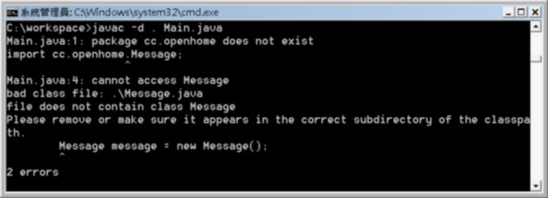
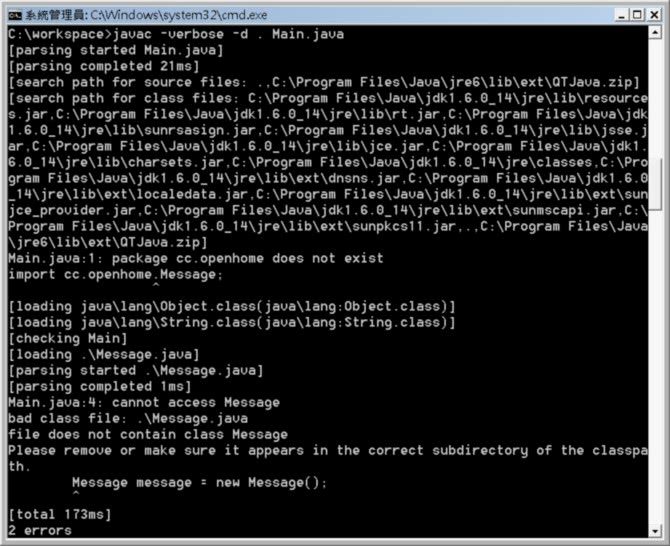
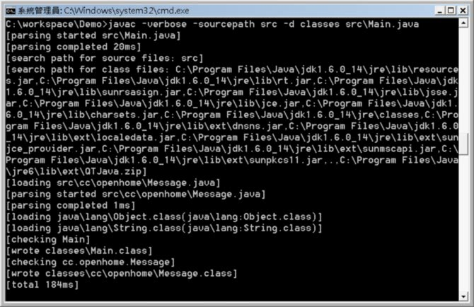

假如你在c:\workspace下寫了個Message.java：
package cc.openhome;
public class Message {
private String message;
public void setMessage(String message) {
this.message = message;
}
public String getMessage() {
return message;
}
}
接著你又在c:\workspace下寫了一個Main.java：
import cc.openhome.Message;
public class Main {
public static void main(String[] args) {
Message message = new Message();
}
}編譯時，你發現到以下的錯誤：

錯 誤訊息有兩個，其中一個指出，你import指定的套件不存在，第二個訊息指出，Message應該放在對應於套件的資料夾階層下，你也許會想到，不是下 了-d引數嗎？不是會先自動建立符合套件的資料夾嗎？ 這個想法是不對的，可以在編譯時下-verbose來獲知詳情：

在 編譯時，編譯器其實會找兩個路徑，一個是.java原始碼所在路徑，一個是.class檔案所在路徑，也就是圖中search path for source files及search path for class files所分別指定的路徑，這兩個路徑，分別可以使用-sourcepath及-classpath（或-cp）來設定。預設上，sourcepath 與classpath相同。在上圖中，環境變數Classpath是設定為.;C:\Program Files\Java\jre6\lib\ext\QtJava.zip，所以sourcepath也預設為.;C:\Program Files\Java\jre6\lib\ext\QtJava.zip。
如果類別包括套件宣告，則編譯出來的.class必須放在對應套件的資料夾階層中，這在 使用 package 分類管理 中說明過了。事實上，如果你的.java原始碼中，有撰寫package陳述，若要能在sourcepath中被尋找到，則也必須放在對應套件的資料夾階層中。
在 這邊的例子當中，第一個錯誤是因為，無論是在sourcepath及classpath路徑下，實際上cc資料夾、openhome資料夾不存在。第二個 錯誤訊息則是由於找不到.class檔案，所以先載入Message.java，但編譯器發現其有package宣告，但又沒有放在對應套件的資料夾階層 下，因而發生錯誤。
要解決這個問題，可以將Message.java放在c:\workspace\cc\openhome資料夾下，然後在c:\workspace下同一個編譯指令。
在編譯時，可以自行指定sourcepath，實務上也是如此。舉例來說，會將原始碼放在src資料夾下，編譯好的.class放在classes資料夾下。例如你也許在c:\workspace下有個Demo專案資料夾，其中src中放置的原始碼若有設定套件資訊，則還會放在對應套件的資料夾階層下，例如：
c:\workspace
\Demo
\src
Main.java
\cc
\openhome
Message.java
\classes
\Demo
\src
Main.java
\cc
\openhome
Message.java
\classes
如果你要在Demo資料夾下，指定編譯src中的.java，並將編譯出來的.class都放到classes資料夾下，則可以如下執行指令：
C:\workspace\Demo>javac -sourcepath src -d classes src\Main.java
最後的src\Main.java是必要的，-sourcepath是指，在編譯指定檔案的過程中，若需要的相關類別的.java，可以在-sourcepath指定的路徑下尋找，所以你還是得指定編譯的目標.java檔案。
當然，要這麼自行建立資料夾，是件蠻麻煩的事，所以才需要IDE工具的輔助，而事實上，你在IDE中建立類別與相關套件時，IDE底層只是幫你處理這些指令細節而已。
當你自行指定-sourcepath時，sourcepath與classpath就是各自不同，可以再下一次-verbose來確認：
